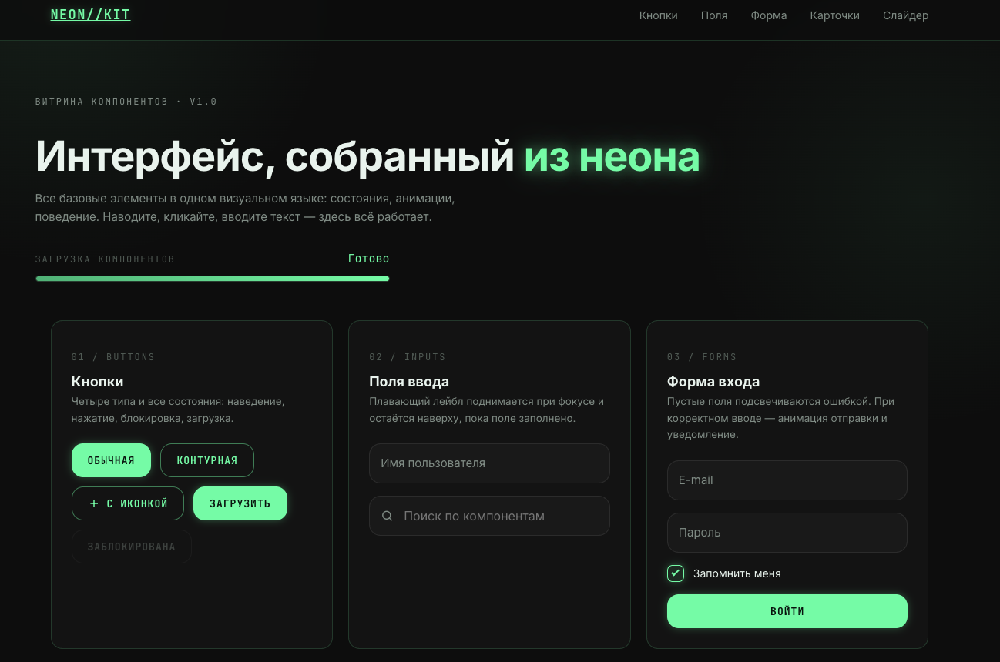

Компоненты
Витрина компонентов · v1.0
Интерфейс, собранный из неона
Все базовые элементы в одном визуальном языке: состояния, анимации, поведение. Наводите, кликайте, вводите текст — здесь всё работает.
Загрузка компонентов
0%

Что внутри
Четыре причины забрать набор
Обзор
Набор в действии
Короткая запись: как ведут себя компоненты при наведении, вводе и переключении.
Инструмент
Калькулятор максимальной скидки
Введите цену, себестоимость и минимально допустимую маржу. Калькулятор покажет, ниже какой цены опускаться нельзя и какую скидку вы вправе дать клиенту.
01 / Buttons
Кнопки
Четыре типа и все состояния: наведение, нажатие, блокировка, загрузка.
02 / Inputs
Поля ввода
Плавающий лейбл поднимается при фокусе и остаётся наверху, пока поле заполнено.
03 / Forms
Форма входа
Пустые поля подсвечиваются ошибкой. При корректном вводе — анимация отправки и уведомление.
04 / Checkboxes
Переключатели и чекбоксы
Кастомная отрисовка поверх нативных элементов — работа с клавиатуры сохранена.
08 / Sliders
Слайдеры
Значение обновляется непрерывно, пока вы тянете ползунок.
07 / Popups
Модальное окно
Закрывается крестиком, кнопкой, клавишей Escape и кликом по затемнению.
05 / Cards
Карточки товаров
При наведении карточка поднимается, изображение приближается и возвращает цвет.
Клавиатура NEON-87
Механика с линейными переключателями и сквозной подсветкой.
12 400 ₽Мышь PULSE X
Оптический сенсор 26 000 DPI, вес 58 грамм, без провода.
6 900 ₽Гарнитура ECHO Pro
Активное шумоподавление и 40 часов работы от одного заряда.
18 250 ₽Монитор GRID 27
27 дюймов, 240 Гц, заводская калибровка цвета.
54 000 ₽